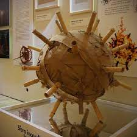

Segue una lista di macchine inventate da Leonardo da Vinci, con relativa descrizione.
Leonardo progetta decine di macchine teoricamente in grado di ottimizzare e automatizzare i processi di produzione e trasporto delle merci. Il Carro veloce rientra tra queste e il foglio da cui è tratto è dedicato esclusivamente a questo progetto. L’idea consiste nel dotare il carro di un complesso sistema di rulli interni sui quali la ruota principale, quella che scorre sul terreno, scarica la maggior parte del peso trasportato con lo scopo di ridurre l’attrito. Si tratta di una logica non molto lontana da quella dei moderni cuscinetti a sfera.
La macchina deve il proprio nome al foglio 176r del Codice Atlantico. La datazione del foglio risulta vicina a quella del Codice del Volo (1505), periodo maturo in cui Leonardo abbandona l’idea di un volo battente a favore di una dinamica più complessa basata sullo studio del movimento delle ali degli uccelli, e su un volo planato sostenuto dal vento e dal movimento della macchina al suo interno.
Sul foglio 984v del Codice Atlantico, Leonardo disegna un sistema che consentiva, in più passaggi, di copiare una vite da un unico modello, in maniera semiautomatica. L'operatore doveva accostare una lama vicino alla vite da produrre mentre il carrello saliva, imprimendo la giusta rotazione e la giusta velocità d'avanzamento.
Nel Codice Atlantico sono disegnate decine di spingarde di ogni forma e dimensione, ma tra queste spicca un progetto rivoluzionario: Leonardo, consapevole delle criticità di questi pezzi di artiglieria, evolve il concetto di spingarda e inventa di fatto un antenato della mitragliatrice.
La Sfera era avvolta da diversi strati di lino imbevuto di una particolare miscela. Al suo interno nascondeva una sacca piena di polvere da sparo. L’arma veniva accesa e scagliata contro il bersaglio. Al momento dell’impatto, le canne laceravano la sacca, liberando la polvere da sparo e innescando una detonazione con conseguente dispersione delle fiamme.
Il disegno sul foglio 629v del Codice Atlantico riporta la didascalia “Ocel della comedia” e lascia intendere che si tratti di un effetto teatrale, come l’Automobile o il Leone Meccanico. L’uccello correva su una fune leggermente inclinata, fissata su due lati opposti di una sala. Il corpo del volatile fungeva da contenitore per il meccanismo interno formato da una ruota e una coppia di bielle che permettevano alle ali di muoversi simulando il volo battente.
Come nel caso della Bicicletta Volante il termine “tandem” potrebbe apparire fuorviante, dato che al tempo di Leonardo questo veicolo non era conosciuto, ma l’idea di utilizzare due piloti rievoca il moderno veicolo su ruote. L’impiego di due uomini ha lo scopo di produrre più energia per il funzionamento della macchina, anche in questo progetto le ali vengono fatte battere tramite il movimento della ruota centrale. Lo sforzo compiuto dai piloti doveva essere particolarmente intenso, tanto che Leonardo intuisce la necessità, di tanto in tanto, di far riposare uno dei due. Chiaramente nessuno dei progetti disegnati in questo foglio del Codice Atlantico aveva nessuna possibilità di librarsi in volo.